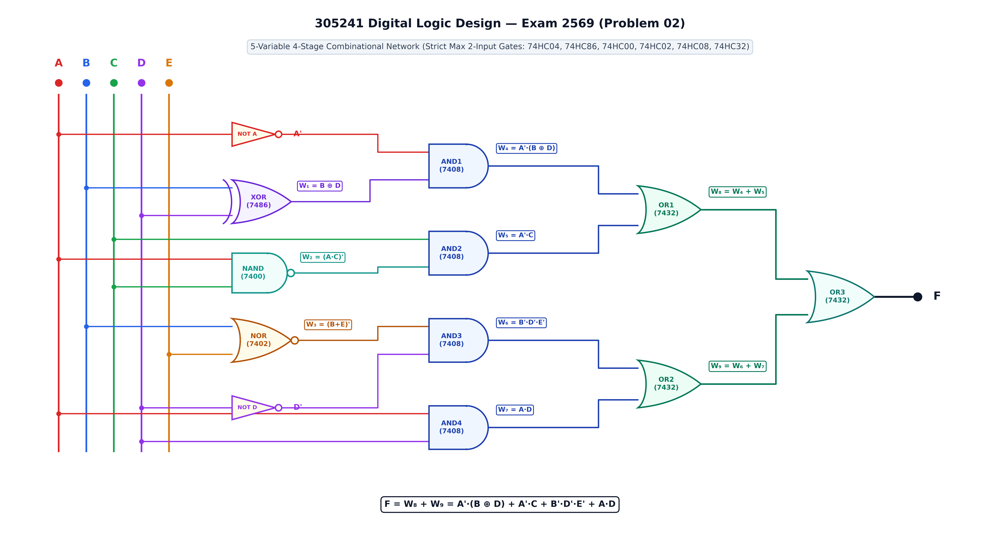
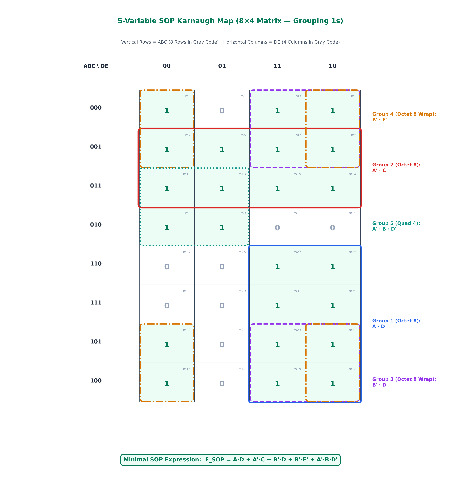
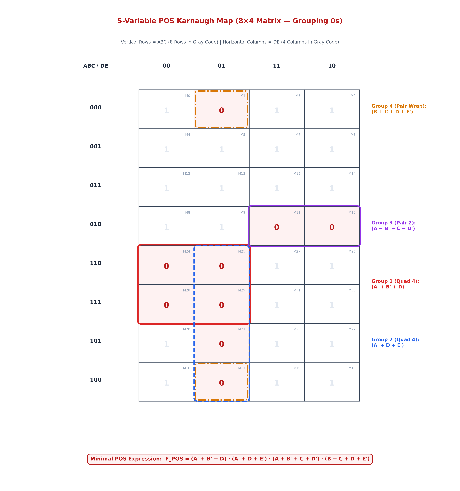
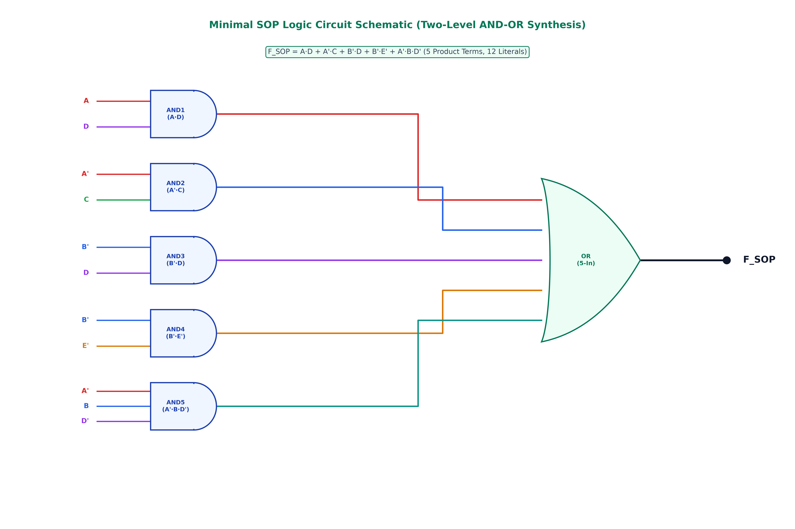
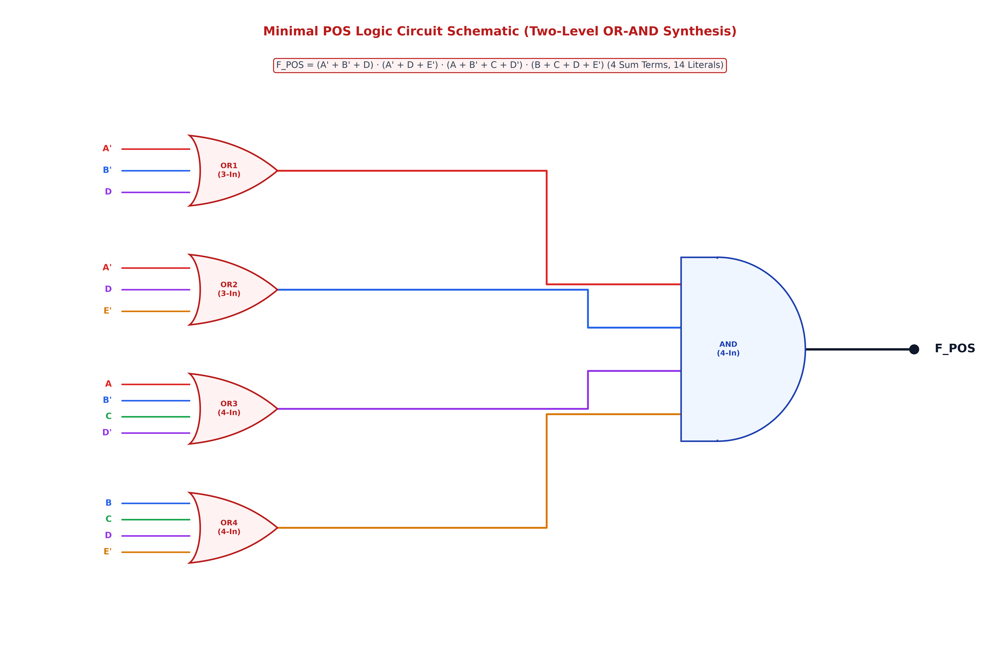
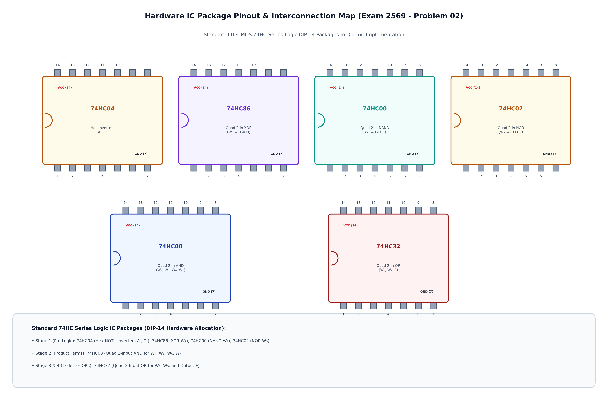

กำหนดวงจรตรรกศาสตร์ดิจิทัลแบบ 5 ตัวแปรอินพุต (A, B, C, D, E) ซึ่งออกแบบตามมาตรฐานข้อสอบจริง โดยกำหนดให้ลอจิกเกตทุกตัวในวงจรมีอินพุตไม่เกิน 2 อินพุต (Strict Max 2-Input per Gate) ต่อเรียงกันเป็นโครงข่าย 4 ภาคสัญญาณ (4-Stage Combinational Network) ประกอบด้วยไอซีมาตรฐาน 74HC04, 74HC86, 74HC00, 74HC02, 74HC08 และ 74HC32
โดยมีสมการประจำจุดทดสอบสัญญาณ (Test Points) ในแต่ละภาคดังนี้:
โครงสร้างของวงจรเชิงผสมต้นฉบับแบ่งออกเป็น 4 ภาคสัญญาณอย่างเป็นระเบียบจากซ้ายไปขวา โดยเกตทุกตัวรับอินพุตไม่เกิน 2 ขา (Strict Max 2-Input):

คลิกสลับสวิตช์อินพุต A, B, C, D, E เพื่อดูการคำนวณระดับแรงดันลอจิกประจำจุดทดสอบ W₁..W₉ และเอาต์พุต F แบบเรียลไทม์:
| รหัสเกต | ประเภทเกต | ไอซีมาตรฐาน | อินพุตที่เชื่อมต่อ | สมการเอาต์พุตประจำจุดทดสอบ |
|---|---|---|---|---|
| NOT 1-2 | Inverter (x2) | 74HC04 (Hex Inverter) | A, D | A', D' |
| XOR | 2-Input XOR | 74HC86 (Quad 2-In XOR) | B, D | W₁ = B ⊕ D = B'·D + B·D' |
| NAND | 2-Input NAND | 74HC00 (Quad 2-In NAND) | A, C | W₂ = (A · C)' = A' + C' |
| NOR | 2-Input NOR | 74HC02 (Quad 2-In NOR) | B, E | W₃ = (B + E)' = B' · E' |
| AND1 | 2-Input AND | 74HC08 (Quad 2-In AND) | A', W₁ | W₄ = A' · (B ⊕ D) = A'·B'·D + A'·B·D' |
| AND2 | 2-Input AND | 74HC08 (Quad 2-In AND) | C, W₂ | W₅ = C · (A·C)' = A' · C |
| AND3 | 2-Input AND | 74HC08 (Quad 2-In AND) | W₃, D' | W₆ = (B+E)' · D' = B' · D' · E' |
| AND4 | 2-Input AND | 74HC08 (Quad 2-In AND) | A, D | W₇ = A · D |
| OR1 | 2-Input OR | 74HC32 (Quad 2-In OR) | W₄, W₅ | W₈ = W₄ + W₅ = A'·(B ⊕ D) + A'·C |
| OR2 | 2-Input OR | 74HC32 (Quad 2-In OR) | W₆, W₇ | W₉ = W₆ + W₇ = B'·D'·E' + A·D |
| OR3 | 2-Input OR | 74HC32 (Quad 2-In OR) | W₈, W₉ | F = W₈ + W₉ = A'·(B ⊕ D) + A'·C + B'·D'·E' + A·D |
ตารางความจริงแสดงค่าอินพุตและสัญญาณทดสอบย่อย W₁, W₂, W₃, W₄, W₅, W₆, W₇, W₈, W₉ และเอาต์พุต F ครบทั้ง 32 แถว:
| Idx | A | B | C | D | E | W₁=(B⊕D) | W₂=(AC)' | W₃=(B+E)' | W₄=A'W₁ | W₅=A'C | W₆=B'D'E' | W₇=AD | W₈=W₄+W₅ | W₉=W₆+W₇ | Output (F) | ผลลัพธ์พจน์มาตรฐาน |
|---|---|---|---|---|---|---|---|---|---|---|---|---|---|---|---|---|
| 0 | 0 | 0 | 0 | 0 | 0 | 0 | 1 | 1 | 0 | 0 | 1 | 0 | 0 | 1 | 1 | m₀ = A'B'C'D'E' |
| 1 | 0 | 0 | 0 | 0 | 1 | 0 | 1 | 0 | 0 | 0 | 0 | 0 | 0 | 0 | 0 | M₁ = (A+B+C+D+E') |
| 2 | 0 | 0 | 0 | 1 | 0 | 1 | 1 | 1 | 1 | 0 | 0 | 0 | 1 | 0 | 1 | m₂ = A'B'C'DE' |
| 3 | 0 | 0 | 0 | 1 | 1 | 1 | 1 | 0 | 1 | 0 | 0 | 0 | 1 | 0 | 1 | m₃ = A'B'C'DE |
| 4 | 0 | 0 | 1 | 0 | 0 | 0 | 1 | 1 | 0 | 1 | 1 | 0 | 1 | 1 | 1 | m₄ = A'B'CD'E' |
| 5 | 0 | 0 | 1 | 0 | 1 | 0 | 1 | 0 | 0 | 1 | 0 | 0 | 1 | 0 | 1 | m₅ = A'B'CD'E |
| 6 | 0 | 0 | 1 | 1 | 0 | 1 | 1 | 1 | 1 | 1 | 0 | 0 | 1 | 0 | 1 | m₆ = A'B'CDE' |
| 7 | 0 | 0 | 1 | 1 | 1 | 1 | 1 | 0 | 1 | 1 | 0 | 0 | 1 | 0 | 1 | m₇ = A'B'CDE |
| 8 | 0 | 1 | 0 | 0 | 0 | 1 | 1 | 0 | 1 | 0 | 0 | 0 | 1 | 0 | 1 | m₈ = A'BC'D'E' |
| 9 | 0 | 1 | 0 | 0 | 1 | 1 | 1 | 0 | 1 | 0 | 0 | 0 | 1 | 0 | 1 | m₉ = A'BC'D'E |
| 10 | 0 | 1 | 0 | 1 | 0 | 0 | 1 | 0 | 0 | 0 | 0 | 0 | 0 | 0 | 0 | M₁₀ = (A+B'+C+D'+E) |
| 11 | 0 | 1 | 0 | 1 | 1 | 0 | 1 | 0 | 0 | 0 | 0 | 0 | 0 | 0 | 0 | M₁₁ = (A+B'+C+D'+E') |
| 12 | 0 | 1 | 1 | 0 | 0 | 1 | 1 | 0 | 1 | 1 | 0 | 0 | 1 | 0 | 1 | m₁₂ = A'BCD'E' |
| 13 | 0 | 1 | 1 | 0 | 1 | 1 | 1 | 0 | 1 | 1 | 0 | 0 | 1 | 0 | 1 | m₁₃ = A'BCD'E |
| 14 | 0 | 1 | 1 | 1 | 0 | 0 | 1 | 0 | 0 | 1 | 0 | 0 | 1 | 0 | 1 | m₁₄ = A'BCDE' |
| 15 | 0 | 1 | 1 | 1 | 1 | 0 | 1 | 0 | 0 | 1 | 0 | 0 | 1 | 0 | 1 | m₁₅ = A'BCDE |
| 16 | 1 | 0 | 0 | 0 | 0 | 0 | 1 | 1 | 0 | 0 | 1 | 0 | 0 | 1 | 1 | m₁₆ = AB'C'D'E' |
| 17 | 1 | 0 | 0 | 0 | 1 | 0 | 1 | 0 | 0 | 0 | 0 | 0 | 0 | 0 | 0 | M₁₇ = (A'+B+C+D+E') |
| 18 | 1 | 0 | 0 | 1 | 0 | 1 | 1 | 1 | 0 | 0 | 0 | 1 | 0 | 1 | 1 | m₁₈ = AB'C'DE' |
| 19 | 1 | 0 | 0 | 1 | 1 | 1 | 1 | 0 | 0 | 0 | 0 | 1 | 0 | 1 | 1 | m₁₉ = AB'C'DE |
| 20 | 1 | 0 | 1 | 0 | 0 | 0 | 0 | 1 | 0 | 0 | 1 | 0 | 0 | 1 | 1 | m₂₀ = AB'CD'E' |
| 21 | 1 | 0 | 1 | 0 | 1 | 0 | 0 | 0 | 0 | 0 | 0 | 0 | 0 | 0 | 0 | M₂₁ = (A'+B+C'+D+E') |
| 22 | 1 | 0 | 1 | 1 | 0 | 1 | 0 | 1 | 0 | 0 | 0 | 1 | 0 | 1 | 1 | m₂₂ = AB'CDE' |
| 23 | 1 | 0 | 1 | 1 | 1 | 1 | 0 | 0 | 0 | 0 | 0 | 1 | 0 | 1 | 1 | m₂₃ = AB'CDE |
| 24 | 1 | 1 | 0 | 0 | 0 | 1 | 1 | 0 | 0 | 0 | 0 | 0 | 0 | 0 | 0 | M₂₄ = (A'+B'+C+D+E) |
| 25 | 1 | 1 | 0 | 0 | 1 | 1 | 1 | 0 | 0 | 0 | 0 | 0 | 0 | 0 | 0 | M₂₅ = (A'+B'+C+D+E') |
| 26 | 1 | 1 | 0 | 1 | 0 | 0 | 1 | 0 | 0 | 0 | 0 | 1 | 0 | 1 | 1 | m₂₆ = ABC'DE' |
| 27 | 1 | 1 | 0 | 1 | 1 | 0 | 1 | 0 | 0 | 0 | 0 | 1 | 0 | 1 | 1 | m₂₇ = ABC'DE |
| 28 | 1 | 1 | 1 | 0 | 0 | 1 | 0 | 0 | 0 | 0 | 0 | 0 | 0 | 0 | 0 | M₂₈ = (A'+B'+C'+D+E) |
| 29 | 1 | 1 | 1 | 0 | 1 | 1 | 0 | 0 | 0 | 0 | 0 | 0 | 0 | 0 | 0 | M₂₉ = (A'+B'+C'+D+E') |
| 30 | 1 | 1 | 1 | 1 | 0 | 0 | 0 | 0 | 0 | 0 | 0 | 1 | 0 | 1 | 1 | m₃₀ = ABCDE' |
| 31 | 1 | 1 | 1 | 1 | 1 | 0 | 0 | 0 | 0 | 0 | 0 | 1 | 0 | 1 | 1 | m₃₁ = ABCDE |
Σm(0, 2, 3, 4, 5, 6, 7, 8, 9, 12, 13, 14, 15, 16, 18, 19, 20, 22, 23, 26, 27, 30, 31)ΠM(1, 10, 11, 17, 21, 24, 25, 28, 29)

แถว: ABC = 110, 111, 101, 100 ที่คอลัมน์ DE = 11, 10
มินเทอม: m₁₈, m₁₉, m₂₂, m₂₃, m₂₆, m₂₇, m₃₀, m₃₁
ผลลัพธ์: ตัวแปร B, C, E ถูกตัดออก เหลือพจน์ A · D
แถว: ABC = 001, 011 (ครบทั้ง 4 คอลัมน์)
มินเทอม: m₄, m₅, m₆, m₇, m₁₂, m₁₃, m₁₄, m₁₅
ผลลัพธ์: ตัวแปร B, D, E ถูกตัดออก เหลือพจน์ A' · C
แถว: ABC = 000, 001 (แถวบน) ร่วมกับ 101, 100 (แถวล่าง) ที่ DE = 11, 10
มินเทอม: m₂, m₃, m₆, m₇, m₁₈, m₁₉, m₂₂, m₂₃
ผลลัพธ์: ตัวแปร A, C, E ถูกตัดออก เหลือพจน์ B' · D
แถว: ABC = 000, 001 และ 101, 100 ที่คอลัมน์ DE = 00 และ 10
มินเทอม: m₀, m₂, m₄, m₆, m₁₆, m₁₈, m₂₀, m₂₂
ผลลัพธ์: ตัวแปร A, C, D ถูกตัดออก เหลือพจน์ B' · E'
แถว: ABC = 011, 010 ที่คอลัมน์ DE = 00, 01
มินเทอม: m₈, m₉, m₁₂, m₁₃
ผลลัพธ์: ตัวแปร C, E ถูกตัดออก เหลือพจน์ A' · B · D'

แถว: ABC = 110, 111 ที่คอลัมน์ DE = 00, 01
แมกซ์เทอม: M₂₄, M₂₅, M₂₈, M₂₉
ผลลัพธ์: ตัวแปร C, E ตัดออก ได้พจน์บวก (A' + B' + D)
แถว: ABC = 110, 111, 101, 100 ที่คอลัมน์ DE = 01
แมกซ์เทอม: M₁₇, M₂₁, M₂₅, M₂₉
ผลลัพธ์: ตัวแปร B, C ตัดออก ได้พจน์บวก (A' + D + E')
แถว: ABC = 010 ที่คอลัมน์ DE = 11, 10
แมกซ์เทอม: M₁₀, M₁₁
ผลลัพธ์: ตัวแปร E ตัดออก ได้พจน์บวก (A + B' + C + D')
แถว: ABC = 000 (แถวบน) และ 100 (แถวล่าง) ที่คอลัมน์ DE = 01
แมกซ์เทอม: M₁, M₁₇
ผลลัพธ์: ตัวแปร A ตัดออก ได้พจน์บวก (B + C + D + E')
เริ่มต้นจากการถอดสมการลอจิกประจำจุดทดสอบของวงจรเชิงผสม 4 ภาคสัญญาณ:
เมื่อพิจารณาคู่พจน์ A'·B'·D และ A·D ร่วมกับ B'·D'·E':
สมการจากการลดรูปด้วยกฎพีชคณิตบูลีนได้ผลลัพธ์:
ซึ่งตรงกับผลลัพธ์ที่ได้จากการหา Prime Implicants ทั้ง 5 กลุ่มในแผนผัง K-Map 8×4 อย่างสมบูรณ์ 100%



| ดัชนีชี้วัด (Metrics) | วงจรต้นฉบับ 2 อินพุต (Original) | Minimal SOP (AND-OR) | Minimal POS (OR-AND) | ผู้ชนะความคุ้มค่า (Winner) |
|---|---|---|---|---|
| รูปแบบโครงสร้าง | 4-Stage Multi-Level (XOR/NAND/NOR/AND/OR) | Two-Level AND-OR (5 Product Terms) | Two-Level OR-AND (4 Sum Terms) | 🏆 POS (4 พจน์) |
| จำนวนลอจิกเกต (Total Gates) | 12 เกต (2 NOT + 1 XOR + 1 NAND + 1 NOR + 4 AND + 3 OR) | 10 เกต (4 NOT + 5 AND + 1 OR) | 9 เกต (4 NOT + 4 OR + 1 AND) | 🏆 POS (9 เกต) |
| จำนวนลิเทอรัล (Literals) | 16 ลิเทอรัล | 12 ลิเทอรัล | 14 ลิเทอรัล | 🏆 SOP (12 ลิเทอรัล) |
| จำนวนไอซี DIP-14 (IC Count) | 6 แพ็กเกจ (7404, 7486, 7400, 7402, 7408, 7432) | 3 แพ็กเกจ (7404, 7408, 7432) | 3 แพ็กเกจ (7404, 7432, 7408) | 🏆 SOP / POS (ลดลง 50%) |
| จำนวนทรานซิสเตอร์ (~CMOS) | ~54 Transistors | ~46 Transistors | ~48 Transistors | 🏆 SOP (ประหยัดสุด) |
| ความล่าช้า (Propagation Delay) | 4 Gate Delays (~36 ns) | 2 Gate Delays (~18 ns) | 2 Gate Delays (~18 ns) | 🏆 SOP / POS (เร็วขึ้น 50%) |
| ความซับซ้อนของสายสัญญาณ | 24 เส้นต่อ | 16 เส้นต่อ | 17 เส้นต่อ | 🏆 SOP |